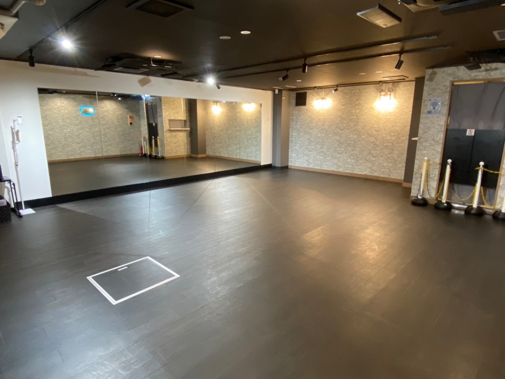

渋谷駅のレンタルダンススタジオおすすめ
最終更新:
渋谷駅周辺のレンタルダンススタジオを、駅からの距離・口コミ・設備でまとめました🎬
個人練習・グループ練習・振付確認など用途に合わせて比較できます。提携スタジオはDSLからオンライン予約OK。空き状況や設備の詳細は各スタジオの公式ページでご確認ください💪
（明治神宮前〈原宿〉駅・神泉駅・表参道駅など、渋谷駅から少し離れた駅のスタジオも含まれています。）
スタジオ比較表
| スタジオ名 | 最寄り駅 | 徒歩 | Google評価 | 口コミ数 | 施設タイプ | 個人練習 | グループ練習 | 詳細 |
|---|---|---|---|---|---|---|---|---|
| BUZZ レンタルスタジオ | 渋谷駅 | 徒歩3分 | 4.3 | 7 | 多目的レンタル | ○ | ○ | 空き状況 |
| チェリッシュスタジオ | 神泉駅 | 徒歩3分 | 3.6 | 12 | 要確認 | ○ | ○ | 空き状況 |
| レンタルスタジオAivic | 神泉駅 | 徒歩1分 | — | — | 多目的レンタル | ○ | ○ | 空き状況 |
| Hina STUDIO | 明治神宮前〈原宿〉駅 | 徒歩7分 | — | — | 要確認 | ○ | ○ | 空き状況 |
| ARTIST DANCE STUDIO | 渋谷駅 | 徒歩7分 | 5.0 | 1 | ダンス主用途 | ○ | ○ | 公式サイト |
| タヒチアンダンススタジオ ライマーラマ表参道 | 表参道駅 | 徒歩7分 | 5.0 | 10 | ダンス主用途 | ○ | ○ | 公式サイト |
| レンタルスタジオ HIKARI | 渋谷駅 | 徒歩6分 | 4.5 | 2 | 多目的レンタル | ○ | ○ | 公式サイト |
| 渋谷 レンタルスタジオ スタジオミッション studio mission | 渋谷駅 | 徒歩6分 | 3.5 | 82 | 多目的レンタル | ○ | ○ | 公式サイト |
| 渋谷のレンタルスタジオ ユニアス | 渋谷駅 | 徒歩3分 | 3.9 | 30 | 多目的レンタル | ○ | ○ | 公式サイト |
| 表参道レンタルスタジオ スタジオ ティノラス | 表参道駅 | 徒歩7分 | 4.2 | 25 | 多目的レンタル | ○ | ○ | 公式サイト |
1. BUZZ レンタルスタジオ（4店舗）
多目的レンタルBUZZ渋谷MARKCITYは、渋谷駅から徒歩5分の便利な立地にあるダンススタジオです！ネオン装飾がかわいらしい雰囲気の中で、リーズナブルな価格で利用します。
ダンス練習で経験者まで、多くのダンサーに愛されているスタジオです。
- BUZZ渋谷TOWER 渋谷駅 徒歩6分 地図 空き状況を確認する
- BUZZ渋谷MARKCITY 渋谷駅 徒歩6分 地図 空き状況を確認する
- BUZZ レンタルスタジオ 渋谷PARK店 渋谷駅 徒歩6分 地図 空き状況を確認する
- BUZZ レンタルスタジオ 渋谷東口SQUARE店 渋谷駅 徒歩3分 地図
🎬 ダンススタジオラボで予約できます✨ 空き状況がオンラインで確認できるのが便利ですよね！
2. チェリッシュスタジオ（6店舗）
要確認チェリッシュスタジオ3号館・10号館は、渋谷駅徒歩12分の住宅地に位置するスタジオです。リーズナブルな料金設定で、フォトシュートなど様々な用途に対応できる標準的で使いやすい施設が揃っています。
公共交通機関でのアクセスをお勧めします。
- チェリッシュスタジオ3号館／10号館 渋谷駅 徒歩12分 地図 空き状況を確認する
- チェリッシュスタジオ1号館/6号館 神泉駅 徒歩3分 地図 空き状況を確認する
- チェリッシュスタジオ7号館 渋谷駅 徒歩7分 地図 空き状況を確認する
- チェリッシュスタジオ5号館 渋谷駅 徒歩5分 地図 空き状況を確認する
- チェリッシュスタジオ11号館/12号館/13号館/14号館 表参道駅 徒歩11分 地図 空き状況を確認する
- チェリッシュスタジオ9号館 渋谷駅 徒歩6分 地図 空き状況を確認する
🎬 DSLで予約できるスタジオです👍 空き状況をリアルタイムでチェックできて助かります！
3. レンタルスタジオAivic（6店舗）
多目的レンタル渋谷駅6分、神泉駅1分ダンス・ヨガ・撮影などにおすすめ1日1回スタッフ完全清掃のスタジオ！1室完備のレンタルダンスルーム、広さ約21㎡、ミラー設置。
Bluetoothスピーカー完備、無料Wi-Fi完備、エアコン完備。更衣室・トイレ・自然光の入る窓完備。
撮影向きルーム・三脚無料レンタルあり。DSLよりオンライン即時予約が可能。
- レンタルスタジオAivic渋谷道玄坂 神泉駅 徒歩1分 地図 空き状況を確認する
- レンタルスタジオAivic恵比寿 恵比寿駅 徒歩3分 地図 空き状況を確認する
- レンタルスタジオAivic恵比寿2号店 広尾駅 徒歩8分 地図 空き状況を確認する
- レンタルピラティススタジオAivic渋谷1号店 渋谷駅 徒歩5分 地図 空き状況を確認する
- レンタルピラティススタジオAivic渋谷2号店 渋谷駅 徒歩7分 地図 空き状況を確認する
- レンタルピラティススタジオAivic恵比寿 恵比寿駅 徒歩4分 地図 空き状況を確認する
🎬 ダンススタジオラボで予約できます✨ 空き状況がオンラインで確認できるのが便利ですよね！
4. Hina STUDIO
要確認
| 住所 | 東京都渋谷区神宮前6-23-11 パークサイドハイツ303 地図 |
|---|---|
| アクセス | 明治神宮前〈原宿〉駅 徒歩7分 |
| 公式サイト | 公式サイト |
好立地な24時間貸スタジオ。壁面１面に鏡で広々ダンス、ヨガ撮影等に使えるスタジオ。
1室完備のレンタルダンスルーム、広さ約66㎡、ミラー設置、フローリング床。Bluetoothスピーカー完備、無料Wi-Fi完備、エアコン完備。
更衣室・トイレ完備。三脚無料レンタルあり。
DSLよりオンライン即時予約が可能。
🎬 オンラインで予約できるのが嬉しい🙌 空き状況を確認して、ぜひ練習場所として活用してみてください！
5. ARTIST DANCE STUDIO
ダンス主用途| 住所 | 〒150-0036 東京都渋谷区南平台町１-９ 南平台宝来ビル B1 地図 |
|---|---|
| アクセス | 渋谷駅 徒歩7分 |
| 営業時間 | 毎日 24時間営業 |
| 公式サイト | 公式サイト |
ARTIST DANCE STUDIO は、渋谷駅から徒歩6分のアクセス便利な立地にあります！スタジオが提供するオンラインレッスンサービスでは、全国から集まった著名なダンサーから直接指導を受けることができるため、スタジオに来られない時間帯でも充実した学習環境が整っています。
🎬 ダンス専用スタジオとして使いやすそうですね✨ 鏡の大きさと床材を確認してから予約するとベターです💡
6. タヒチアンダンススタジオ ライマーラマ表参道
ダンス主用途| 住所 | 〒150-0001 東京都渋谷区神宮前５丁目１３-１４ 地図 |
|---|---|
| アクセス | 表参道駅 徒歩7分 |
| 営業時間 | 月: 10:00〜21:00 / 火: 定休日 / 水〜金: 10:00〜21:00 / 土: 10:00〜20:30 / 日: 定休日 |
| 電話番号 | 03-3469-0672 |
| 公式サイト | 公式サイト |
表参道駅から徒歩6分のタヒチアンダンススタジオ ライマーラマ表参道は、基礎から丁寧に教える講師陣が魅力です！受賞経歴のあるインストラクターによる丁寧で楽しいレッスンと、温かみのある雰囲気で、ダンス練習で経験者まで安心して通えます。
華やかなコスチュームでのステージ経験も多く、ダンスの上達を実感しながら充実した時間を過ごせるスタジオです。
🎬 練習用途にしっかり対応してるスタジオですね。振付確認にも使いやすそうです🎵
7. レンタルスタジオ HIKARI
多目的レンタル| 住所 | 〒150-0043 東京都渋谷区道玄坂２丁目２０-２６ エクシール道玄坂 104号室 藤和 地図 |
|---|---|
| アクセス | 渋谷駅 徒歩6分 |
| 営業時間 | 毎日 24時間営業 |
| 電話番号 | 050-3196-4716 |
| 公式サイト | 公式サイト |
渋谷駅から徒歩6分のアクセス便利なレンタルスタジオです！清潔で快適な環境が整っており、ダンスレッスンや動画撮影などの利用に最適です。
初めての利用者にも使いやすい設計となっています。ダンス利用の適否は、床材・鏡・広さを事前に公式サイトで確認してください。
🎬 多目的スタジオなので、ダンス用途での使い勝手は事前確認が大事🔍 鏡と床材をチェックしてみてください！
8. 渋谷 レンタルスタジオ スタジオミッション studio mission
多目的レンタル| 住所 | 〒150-0043 東京都渋谷区道玄坂２丁目２８-５ 2-10F 渋谷道玄坂ビル 秀永 地図 |
|---|---|
| アクセス | 渋谷駅 徒歩6分 |
| 営業時間 | 月〜水: 10:00〜6:00 / 金: 10:00〜6:00 / 土・日: 9:00〜6:00 |
| 電話番号 | 03-6823-4800 |
| 公式サイト | 公式サイト |
渋谷駅から徒歩5分の好立地にある、複数のスタジオを備えた充実した施設です！音響や照明、空調などの設備が整っており、ダンスクラスの受講からワークショップ、プライベートレッスンまで、様々な用途で利用できます。
定期的に開催されるクラスも多く、ダンスを学びたい方にぴったりのスタジオです。
🎬 多目的スタジオなので、ダンス用途での使い勝手は事前確認が大事🔍 鏡と床材をチェックしてみてください！
9. 渋谷のレンタルスタジオ ユニアス
多目的レンタル| 住所 | 〒150-0043 東京都渋谷区道玄坂１丁目７-１０ リードシー渋谷道玄坂 B1F 新大宗渋谷 地図 |
|---|---|
| アクセス | 渋谷駅 徒歩3分 |
| 営業時間 | 毎日 24時間営業 |
| 公式サイト | 公式サイト |
最寄りの渋谷駅から徒歩3分でアクセスできます。レンタルスタジオとして運営されており、ダンス練習での利用実績もあります。
床材や広さ、利用ルールについては事前に確認することをおすすめします！口コミ30件の評価が参考になります。
🎬 多目的スタジオなので、ダンス用途での使い勝手は事前確認が大事🔍 鏡と床材をチェックしてみてください！
10. 表参道レンタルスタジオ スタジオ ティノラス
多目的レンタル| 住所 | 〒107-0062 東京都港区南青山５丁目１３-９ 地図 |
|---|---|
| アクセス | 表参道駅 徒歩7分 |
| 営業時間 | 月〜金: 10:00〜21:00 / 土・日: 9:00〜21:00 |
| 電話番号 | 03-6418-8181 |
| 公式サイト | 公式サイト |
表参道駅から徒歩6分の好立地にある表参道レンタルスタジオ スタジオ ティノラスは、清潔で広々とした空間が特徴です。壁面の鏡と白い床、差し込む自然光で、ダンスやヨガなどのレッスンに最適な環境が整っており、SNS映えも良好です！
3フロアの異なる雰囲気の中から選べ、駐車スペースも完備しているため、アクセスの良さが魅力です。
🎬 多目的スタジオなので、ダンス用途での使い勝手は事前確認が大事🔍 鏡と床材をチェックしてみてください！
渋谷駅でレンタルダンススタジオを選ぶポイント
- 駅からの距離：練習後の移動も考えると、駅から徒歩5分以内が使いやすいです。最寄り駅ごとにスタジオ数が変わるため、集合しやすい駅を基準に選ぶのがおすすめです。
- 床材の確認：ダンス練習にはフローリングやリノリウム床が向いています。カーペット床はターンやスライドに不向きな場合があるため、予約前に確認しておきましょう。
- 鏡の有無・サイズ：振付確認には全身が映る大きな鏡が便利です。鏡の枚数や配置は公式サイトの写真で事前に確認できることが多いです。
- 部屋の広さ：個人練習なら10〜20㎡程度、グループ練習には30㎡以上が目安です。人数に合わせた広さを確認しておきましょう。
- 音響設備：Bluetooth対応スピーカーや音楽再生環境が整っているか確認しましょう。持ち込み可否についても確認しておくと安心です。
- 予約のしやすさ：オンライン予約・直前予約への対応、キャンセルポリシーも事前に確認しておくと利用しやすくなります。
エリア・駅別の特徴
| エリア（駅） | 特徴 |
|---|---|
| 渋谷駅周辺 | 掲載5スタジオと選択肢が豊富。チェーン1・個人4の混在。最短177mと駅直近。平均★4.2。DSL提携1スタジオあり。 |
| 神泉駅周辺 | 掲載2スタジオ。チェーン系が中心。最短78mと駅直近。平均★3.6。DSL提携2スタジオあり。 |
| 表参道駅周辺 | 掲載2スタジオ。個人・独立系スタジオのみ。平均492mと駅近。平均★4.6と高評価。 |
| 明治神宮前〈原宿〉駅周辺 | 掲載1スタジオ。個人・独立系スタジオのみ。平均488mと駅近。DSL提携1スタジオあり。 |
個人練習・グループ練習で確認すべき設備
個人練習の場合
- 全身が映る鏡（フォームや振付を確認できるサイズ）
- 音楽再生環境（スピーカー・Bluetooth接続など）
- 1時間単位で予約できる柔軟な料金体系
- 荷物を置けるスペースや更衣室の有無
グループ練習の場合
- 4〜10人が動ける広さ（30㎡以上が目安）
- フォーメーション確認しやすい鏡の配置
- スピーカーの音量が十分であること
- 複数時間まとめて予約できる料金プランの有無
- 着替えスペース・荷物置き場の確保
よくある質問
まとめ
渋谷駅エリアには、BUZZ レンタルスタジオ、チェリッシュスタジオ、レンタルスタジオAivicなどのレンタルダンススタジオがあります。いずれも駅から近い立地にあり、個人練習・グループ練習・振付確認など幅広い用途に使えます。
気になるスタジオがあれば、空き状況や設備条件を確認しながら練習スタイルに合う場所を選んでみてください💪 鏡の有無・床の種類・部屋の広さなど、用途に合わせた条件で比較するのが選びやすいですよ！
— ヤジー （株式会社リズム 代表）🎬
この記事について
この記事はヤジー（株式会社リズム 代表取締役・27歳）が執筆・監修しています。ダンス動画の撮影・編集を日本中で手がけており、スタジオ選びに関する実体験をもとに情報をシェアしています🎬
- 掲載スタジオはGoogle口コミ評価・駅からの距離・ダンス利用実績をもとに選定しています。
- 営業時間・電話番号は公式情報をもとに記載していますが変更されることがあります。最新情報は公式サイトをご確認ください。
- DSL提携スタジオはオンライン即時予約が可能です。